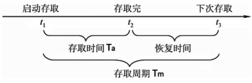
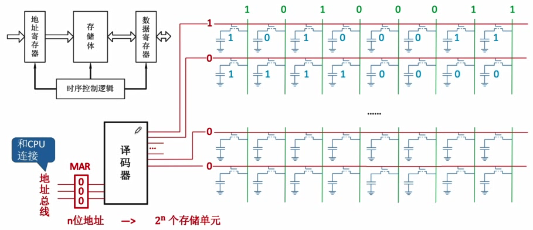
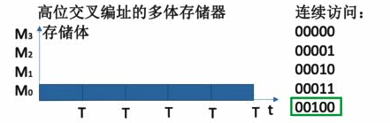
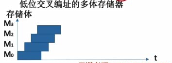
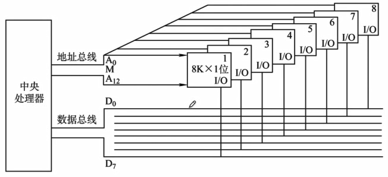
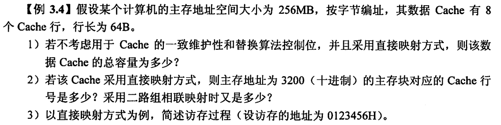
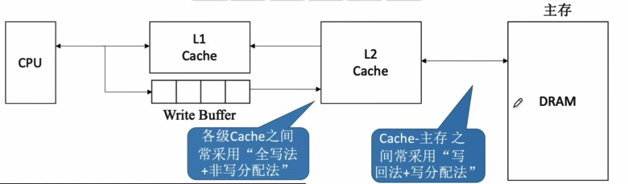
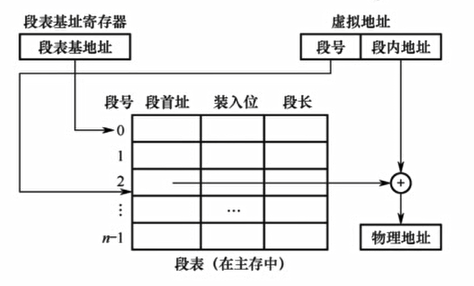

第三章 存储系统
3.1 存储系统基本概念
存储器的层次结构
- 高速缓存（Cache）：容量很小、速度可以CPU速度匹配、价格高
- 主存储器（主存）：容量较小、存取速度较快、每位价格较高
- 辅助存储器（辅存、外存）：容量大、读取速度较慢、单位成本低
存储器的分类
- 存储介质
- 半导体：如主存、Cache
- 磁性材料：磁盘、磁带
- 光：光盘
- 存取方式
- 随机存取存储器（RAM）：读写任何一个存储单元所需时间都相同，与存储单元所在的物理位置无关。
- 顺序存取存储器（SAM）
- 直接存取存储器（DAM）：如磁盘。既有随机存取特性，又有顺序存取特性。
- 相联存储器（CAM）：可以按照内容检索到存储位置进行读写，如快表
- 信息的可更改性
- 读写存储器：既能读也能写
- 只读存储器（ROM）：只能读、不能写，如CD-ROM，蓝光光碟
- 信息的可保存性
- 易失性存储器（主存、Cache）：断电后，存储信息消失
- 非易失性存储器（磁盘、光盘）
- 破坏性读出：信息读出后，原存储信息被破坏，如DRAM，读出数据后要进行重写
- 非破坏性读出，如SRAM、磁盘、光盘
存储器的性能指标
-
存储容量：存储字数（即存储单元的数量）×字长（如1M×8位）
-
单位成本：每位价格=总成本/总容量
-
存储速度：数据传输率=数据的宽度（存储字长）/存储周期

- 存取时间：从启动一次存储器操作到完成该操作所经历的时间，分为读出时间和写入时间
- 存取周期/读写周期/访问周期：存取时间+恢复时间。存储器进行一次完成的读写操作所需的全部时间
- 主存带宽/数据传输率：表示每秒从主存进出信息的最大数量，单位为字/秒、字节/秒或位/秒
3.2 主存储器的基本组成
半导体元件&存储芯片的原理
-
存储元：电容（存储比特）+MOS管
-
根据地址读取/写入数据：

-
$2^n$个存储单元 $\rightarrow $ $n$位地址 $\rightarrow $ $n$条地址线
-
$n$位存储字长 → 一次可读出$n$比特数据 → $n$条数据线
如何实现不同的寻址方式
- 如一个存储单元字长为一字节，且按字节寻址，则$2^n$个存储单元对应$n$位地址
- 按字寻址，假设一字=四字节，将字节地址左移两位即得即字地址（字开头第一个字节的地址）
3.3 DRAM和SRAM
存储元件不同导致的特性差异
- DRAM芯片：使用栅极电容存储信息
只有一根数据线，直接根据数据线上的电平判断输出的是0还是1
读出一次后电容放电信息被破坏（破坏性读出），所以需要重写数据，也称为“再生”
读写速度更慢
单个存储元制造成本低，集成度高，因此单位成本低
常用作主存
- SRAM芯片：使用双稳态触发器存储信息
两根数据线，分别是BL和BLX，根据哪条线输出低电平来判断输出的是0还是1
读出数据后，触发器状态保持稳定，无需重写
读写速度更快
单个存储元制造成本高，集成度低，因此单位成本高
常用作Cache（更接近CPU）
- DRAM和SRAM都是易失性存储器，信息在断电后丢失
DRAM的刷新
问题：DRAM中的电容即使不断电，经过2ms时间电容中的电荷就会流失，造成数据丢失，因此需要不断重写数据。
- 多久需要刷新一次？刷新周期：2ms
- 每次刷新多少存储单元？以行为单位，每次刷新一行存储单元
DRAM中的存储单元结构
在存储单元数量较多时（如百万级），如果只采用单个译码器进行选址，那么译码器的选通线也要有百万条，这在工程上实现难度很大。
为了避免这种情况，DRAM中存储单元排成矩形，译码器分为行地址译码器和列地址译码器两个，分别输出行地址选通信号和列地址选通信号，从而选中存储单元。
这样做可以减少选通线的数量，简化电路
DRAM刷新
-
如何刷新：硬件支持，每次读出一行信息后再重新写入，占用1个读/写周期
-
在什么时候刷新：
假设DRAM内部结构为128×128，读/写周期为0.5μs
分散刷新：每次读写完都刷新1行，则存取周期=2个读/写周期，前一个读/写周期用于正常读写，后一个读/写周期用于刷新某行。一方面，并非读写哪行就刷新哪行，而是只要发生了读写就刷新一行；另一方面，可以认为读写操作是一直都有的，不会出现没有读写导致没有刷新的情况。这种方式下，在电容保持时间2ms内能把全部128行刷新若干遍。
集中刷新：2ms内集中安排一个时间全部刷新。不影响正常读写，因此存取周期=1个读/写周期；但在集中刷新的时间段内无法访问存储器，这段时间称为访存死区。
异步刷新：2ms内每行只刷新1次即可。其实是将集中刷新的死时间平均分布在了2ms的时间段中。由于有128行，那么2ms内需要产生128次刷新，即每隔2ms/128=15.6μs一次，每次刷新需要1个读写周期，即每15.6μs中都存在0.5μs的死时间。
DRAM的地址线复用技术
由于DRAM中存储单元数量大，即使分成两个译码器进行选址，单个译码器所需要的地址线仍然较多。为了进一步减少地址线，地址分两次送入，一次先送入行地址，另一次再送入列地址。
增设行地址缓冲器和列地址缓冲器，两次送入先送到缓冲器上，再由缓冲器送到译码器。
3.4 ROM
ROM的分类
- MROM（掩模式只读存储器）：厂家在生产过程中直接写入信息，任何人不可重写
- PROM（可编程只读存储器）：用户可用专门的写入器写入信息，写一次后不可更改
- FPROM（可擦除可编程只读存储器）：允许用户写入信息，并用某种方式擦除数据，多次重写
- UVEPROM（紫外线擦除）：紫外线照射，擦除所有信息
- EEPROM（电擦除）：电擦除，擦除特定的字
- Flash Memory（闪存）：断电后也可保存信息，并可进行多次快速擦除重写（如U盘、SD卡）；写比读慢。
- SSD（固态硬盘）：多次快速擦除重写。和闪存的核心区别在于控制单元不一样。
计算机内的重要ROM
问题：主存RAM断电后数据全部丢失，而操作系统等又都存储在辅存里，那么刚开机的时候CPU从哪里得到指令来启动操作系统？
- 主板上有BIOS芯片，是ROM，存储了自举装入程序，负责引导装入操作系统。
- 主存=RAM+ROM，二者常统一编址
3.5 双端口RAM和多模块存储器
双端口RAM
问题：多核CPU同时访问同一个主存储器，如何实现？
解决：
- 两组完全独立的数据线、地址线、控制线，分别接到CPU1、CPU2
- CPU、RAM中要有更复杂的控制电路
问题：两个端口的操作有以下4种情况：
- 同时对不同的地址单元存取数据✓
- 同时对同一地址单元读出数据✓
- 同时对同一地址单元写入数据（×写入错误）
- 同时对同一地址单元，一个写入数据，一个读出数据（×读出错误）
解决：
忙信号，当有一个端口正在进行操作时置忙信号
多模块存储器
一个存储器中可能有多个内存条（存储体），需要选择
-
高位交叉编址
-
体号位于地址高位
-
相邻的地址对应的存储单元基本上位于同一个存储体上
-
这会导致，按地址连续访问数据时，操作都针对同一个存储体，而一次操作消耗一个存储周期。
假设存储体的存取周期为T，存取时间为r，恢复时间为3r，1T=4r，意味着每次操作都要等待较长的恢复时间。

-
采用高位交叉编址时，连续取n个存储字的总耗时为nT.
-
低位交叉编址
-
体号位于地址低位
-
相邻的地址对应的存储单元位于不同的存储体上
-
按地址连续访问数据时，每次操作都在与上次操作不同的存储体上，一次操作只需要1r的存取时间，而不必等待3r的恢复时间。如果存储体恰好有4个，则对第4个存储体操作后第1个存储体恰好恢复完毕，存取操作之间可以无缝衔接。
-
采用低位交叉编址时，连续取n个存储字的总耗时为nr+3r=T+(n-1)r（3r是最后一次存取操作后的恢复时间）

-
应该有多少个存储体？
存取周期为T，存取时间为r，流水线不间断，应保证模块数m≥T/r
m=T/r是最好的，m＞T/r会出现流水线中的气泡
## 3.6 主存与CPU的连接
### 单块存储芯片与CPU的连接
### 多块存储芯片与CPU的连接
#### 位扩展法
解决的问题：单个存储芯片的字长（如8位）小于CPU能接收的最大字长（64位），没有充分利用CPU和主存间的数据传输能力
方法：
- eg：利用8片8K×1位（$8\times2^{10}\times 1\ bit$）的存储芯片，组成1个8K×8位的存储器，容量为$8\times2^{10}\times8=8KByte$

#### 字扩展法
-
线选：
单独拿出某条地址线来对应某个芯片的选择；一条地址线只对一个芯片输出使能信号
弊端：当多条片选地址线同时输出使能信号时，多个芯片同时被使能，造成数据输出冲突
-
片选
增加一个译码器芯片，如2-4译码器，使得2条地址线信号产生4个不同组合信号对4个不同芯片使能（输出信号0001、0010、0100、1000）
在实际中这2条地址线应该是相邻的，使得编址是连续的
考试中可能会出现题目所给的片选地址线不相邻的情况，这是无法实际应用的
#### 字位扩展法
例如，有8个16K×4位的芯片，两两一组构成位扩展，则一组芯片为16K×8位，组内2个芯片共用使能信号，共4组。CPU使用2条地址线，通过2-4译码器输出4组使能信号，分别对4组芯片使能。从而8个芯片整体组成4×16K×8位的存储器，总容量为64KByte。
地址线总数计算：
- 位扩展不改变存储单元数量，一组位扩展的芯片寻址需要14条地址线（$16K=2^4×2^{10}=2^{14}$）
- 经过2-4译码器对4组芯片产生使能信号，需要2条地址线确定是4组芯片中的哪一组芯片
- 存储器总地址线数量/地址位长为16
3.7 Cache的基本概念和原理
问题：双端口RAM、多模块存储器虽然已经经过了优化，提高了存储器的工作速度，但和CPU的速度差距依然很大。
解决：根据程序的“局部性原理”，采用更高速的、容量更小（因为成本更高）的存储单元来作为CPU与存储器之间的中转可以缓解主存与CPU之间的速度矛盾，也就是Cache。Cache的读写速度是主存的60倍。
Cache的工作原理
- 集成在CPU内部
- 使用SRAM（双稳态触发器、无需重写）实现，速度快，成本高
- 将当前正在访问的主存地址及邻近地址的数据全部放入Cache中
性能分析
设$t_c$为访问一次Cache所需时间，$t_m$为访问一次主存所需时间
-
命中率$H$：CPU欲访问的信息已在Cache中的比率
-
缺失率$M$：$M=1-H$
-
Cache-主存系统的平均访问时间 $t$
情况1：$t=Ht_c+(1-H)(t_c+t_m)$
-
当访问命中时，CPU直接从Cache取出数据，耗时$t_c$
-
当访问未命中时，浪费了访问Cache的时间$t_c$，还要继续耗费$t_m $时间从主存中取数据，总访问时间为$t_c+t_m$
情况2：$t=Ht_c+(1-H)t_m$
- 同时访问Cache和主存，若Cache命中则立即停止访问主存
哪些数据存入Cache
局部性原理
- 时间局部性：现在访问的地址，不久之后很可能被再次访问
- 空间局部性：现在访问的地址，其邻近的地址很可能即将被访问
如何决定哪些数据要被放入Cache中：
- 将CPU目前访问的地址“周围”的部分数据放到Cache中。
- 将主存和Cache的存储空间分块。如1KB一块，主存与Cache之间以块为单位进行数据交换。
- CPU当前访问地址所属的块被复制一份存入Cache。
主存/Cache的块：
- 主存的块又称页/页框/页面
- Cache的块又称行
Cache和主存的映射方式
问题：如何区分Cache与主存的数据块对应关系？
- 将Cache中的块配一个有效位和一个标记
- 标记说明这个Cache块中的数据来自主存中哪个块
- 有效位标明这个Cache块中的数据是否还有效（是否可以替换）
全相联映射
- 主存中任意一个块可以放入Cache中任意一行。
- 判断命中：若当前需要访问的主存地址为A，用A的前22位（块号）与Cache中的标记逐一匹配，若匹配成功且有效位为1则Cache命中。
- 优点：比较灵活，Cache行冲突概率低，空间利用率高、命中率高
- 缺点：标记比较速度慢，通常用昂贵的按内容寻址的相联存储器进行地址映射
假设某计算机中的主存地址空间大小为256MB，按字节编址，数据Cache中有8个Cache行，行长为64B。说明全相联映射方案。
由于主存和Cache需要划分等大的块，主存需要按每64B一块进行分块。
按字节编址，则地址共有$256\times2^{20}=2^{28}$个，则地址位长为28位。
为块内64B数据编址需要占用其中6位，其余22位作为主存块号。
相应的，Cache中的标记也是22位长。
直接映射
-
主存中的一个块只能放在Cache中的固定位置
-
位置计算方式：主存块号%Cache总块数
-
优点：可以根据映射方式的特点，对标记的位长进行优化。假设Cache总块数为$2^3$，则主存块号的末尾3位就是它所对应的Cache行号。那么标记只需要存储主存块号的前19位。
判断命中时，先根据当前访问的地址块号的后3位找到它固定存放的Cache块，再用前19位与该块标记进行匹配即可。
-
缺点：只能放在固定位置，若恰好该Cache行被占用了，即使其他Cache行还空着也不能利用。
-
若在装入新行时发生冲突（对应Cache行已有数据），则无条件替换掉旧行，无需替换算法
组相联映射
- 主存中的一个块放在Cache中的特定分组中的任意一行。
- 所属分组=主存块号%分块数
- 与直接映射类似，若Cache总组数为$2^2$，则主存块号的末2位就是它对应的Cache组号。此时标记位长只需要20位。
- 判断命中时，先根据当前访问的地址块号的后2位找到对应的Cache组，再用前20位与组内Cache块的标记逐个匹配。
Cache容量计算
每个Cache行除了存储数据以外，还需存储标记项，标记项包括：有效位、标记位、一致性维护位、替换算法控制位。
有效位：1位
标记位：与主存块号长度及映射方式相关。如主存块号长度22位，Cache行数为8，则
- 直接映射方式下，标记位长度19位；
- 全相联映射方式下，标记位长度22位；
- 二路组相联映射方式下，标记位长度20位

解：（1）行长64B是指不包括标记项的净存储大小。计算可得地址位数有28位，而块内地址有64个，占6位地址，则块号共有22位。采用直接映射方式，8行需要3bit表示，故标记位只需22-3=19bit。有效位需要1bit，不考虑其他，则每个Cache行有标记项共20bit+净存储大小512bit=532bit，8行总共4256bit。所以Cache总容量为4256bit
（2）一块有64个地址，地址3200对应3200/64=50，块号为50；50%8=2，故对应Cache行号为2，即010
Cache替换算法
问题：Cache很小，主存很大。Cache满了怎么办？
随机算法（RAND）
若Cache已满，则随机选择一块替换。
实现简单，但完全没考虑局部性原理，命中率低，实际效果很不稳定
先进先出算法（FIFO）
若Cache已满，则替换最先被调入Cache的块
实现简单，但依然没考虑局部性原理，最先被调入Cache的块也可能是被频繁访问的
抖动现象：频繁的换入换出现象（刚被替换的块很快又被调入）
近期最少使用算法（LRU）
为每一个Cache块设置一个计数器，用于记录该Cache块有多久未被访问。当Cache满时替换计数器最大的块。
具体方法：
- Cache块命中时，该块计数器清零，且比其先前计数还要低的块+1，其它不变。
- 未命中且还有空闲块时，新装入的块计数器置0，其他非空闲块+1
- 未命中且无空闲块时，计数器最大的Cache块被淘汰，新装入的块计数器置0，其他全部+1
上述方法造成的现象是，若Cache块总数为$2^n$，则计数器的数字一定只在$0到2^n-1$之间，使计数器可以用$n$位二进制数存储。且Cache装满后所有计数器的值一定不重复。
本算法基于“局部性原理”，实际运行效果优秀，Cache命中率高。
但若频繁访问的主存块数量＞Cache块数量，依然会发生抖动现象。
最不经常使用算法（LFU）
为每一个Cache块设置一个计数器，记录每个Cache块被访问过几次。当Cache块满后替换计数器最小的块。若计数器最小的块有多个，可按行号递增、或FIFO策略进行选择。
计数器数字可能会很大。
曾经最经常访问的主存块在未来不一定会用到，并没有很好地遵循局部性原理，实际运行效果不如LRU
Cache写策略
问题：CPU修改了Cache里的数据副本，如何确保主存中数据母本的一致性？
写命中
CPU对某个主存地址对应的数据进行写操作，且该数据已经被调入Cache块。
写回法
CPU对Cache块写命中时，只修改Cache中的内容，而不立即写入主存。当此块被换出时才写回主存。
为了节省时间，需要区分哪些块需要被写回而哪些块不需要。因此对每个Cache块增加一个脏位，用于标记Cache块内数据是否被修改过
减少访存次数，但存在数据不一致的隐患
全写法
CPU对Cache块写命中时，同时修改Cache和主存中的内容。
访存次数增加，速度变慢，但更能保证数据一致性。
一般使用写缓冲（SRAM实现的FIFO队列），而不是由CPU分别修改Cache和主存的数据。具体是，CPU写命中时，同时修改Cache内容和写缓冲的内容（修改写缓冲比修改主存更快），CPU执行其他操作时，写缓冲再由硬件电路控制修改主存内容。
使用写缓冲，CPU写的速度很快，若写操作不频繁则效果很好；但若写操作很频繁，则会因为写缓冲饱和而发生阻塞，换句话说，此时写缓冲成为了读写速度的瓶颈。
写不命中
CPU对某个主存地址对应的数据进行写操作，但该数据不在Cache中。
写分配法
将主存中的块调入Cache，CPU再在Cache中修改。通常搭配写回法使用。
非写分配法
CPU直接向主存写数据，不调入Cache。搭配全写法使用。
多级Cache

离CPU越近的速度越快，容量越小
离CPU越远的速度越慢，容量越大
3.8 页式存储器
一个程序所需的内存空间可能很大（如1GB），但实际到CPU执行时可能只需要其中的一小部分信息（如1KB），若直接将程序全部装载到内存中会导致内存利用率不高。如何解决？
主存和Cache被划分为若干个等大的块，假设块大小为1KB（之前提到，主存块又被称为页/页面）。现有某程序大小为4KB，则程序会被分为4个页，每个页面的大小和主存块的大小相同。这四个页在主存中分散存储。
逻辑地址与物理地址
程序编写/执行时采用的机器指令中的地址是逻辑地址。
逻辑地址如何对应程序分页中的数据？
整个程序共$4KB=2^{12}B$，地址位长12，范围0x000~0xFFF
由于一页大小为1KB，按字节编码则需要10位地址，为页内地址；其余2位则为逻辑页号。
知道了数据的逻辑地址，则可以通过某种映射方式来找到对应的物理地址，即主存地址。这一步骤由操作系统完成。
逻辑地址具体如何映射到物理地址？
页表
页表保存了逻辑页号与主存块号之间的一一对应信息。形如下表：
| 逻辑页号 | 主存块号 |
|---|---|
| #0 | 2 |
| #1 | 4094 |
| ... | ... |
知道了逻辑页号，就可以通过页表找到对应的主存块号。
而页内地址就是块内地址（因为逻辑页和主存块大小是一样的），与主存块号拼接即得物理地址。
如何知道页表本身数据所在的物理地址？
有专门的页表基址寄存器负责保存页表在主存中的存放位置。
根据局部性原理，同样的逻辑页号可能会多次访问，每次都要去页表查找吗？
查询页表的速度是很慢的，所需时间相当于一次访存。
在实际中，会将近期访问的页表项放入更高速的存储器（使用SRAM），加快地址变换的速度，这个类似Cache的存储器就是快表。相对的，普通的页表就是慢表。
快表（TLB）
存储页表项的副本（也就是常用索引的副本）
使用SRAM实现，查询速度很快。
是一种相联存储器，即可以按数据内容访问（而不是按地址）。
访存流程总结

3.9 虚拟存储器
虚拟存储系统
主存——辅存之间的数据调度，解决主存容量不够的问题。
通过运行时才将所需的部分程序数据从辅存调入主存的方式，使得总数据量远大于主存容量的多个程序可以同时在计算机上运行，给用户一种主存非常大的错觉，因此是“虚拟”存储系统。
页式虚拟存储器
将原本位于辅存中的程序数据按页划分，每页大小相同。
当程序运行时，按页将所需数据从辅存调入到主存中，分散存储。
页表所需要承担的功能
除了保存前文所述的存储逻辑页号与主存块号的映射关系以外，页表还存储了辅存-主存数据调度所需信息，包括类似于Cache中的有效位、脏位等。
| 逻辑页号 | 主存块号 | 外存块号 | 有效位 | 访问位 | 脏位 |
|---|---|---|---|---|---|
| #0 | 2 | a | 1 | 13 | 0 |
| ... | ... | ... | ... | ... | ... |
首先，当逻辑页号对应的数据实际上还没有被调入到主存中时，逻辑页号-主存块号这一映射关系应该是无效的，反之映射关系有效。为了标记这一点，需要用到有效位。
其次，当逻辑页号对应的数据还在辅存中而未调入主存时，需要先到辅存中找到对应的数据。去哪里找？页表也保存了逻辑页号-外存块号这一映射关系，可以根据逻辑页号，通过页表去辅存中找到对应数据。
再次，主存很小而辅存很大，若主存已满，同样需要进行替换。主存的替换为页面替换。同样的，需要有相应的页面替换算法，访问位用于记录算法实现所需要的信息。
最后，CPU对主存数据有修改时，如何保证主存-辅存的数据一致性？脏位用于标记主存块中数据是否被修改。脏位结合写回算法实现主存-辅存的数据一致性。
段式虚拟存储器
将辅存中的程序数据按功能模块进行划分，每个模块为一段。如源代码段、库函数段、变量段等。
分段的方式会使得各段并不等长。使用段表来记录相关信息。

段页式虚拟存储器
将程序数据按逻辑结构先分段，段内再划分为固定大小的页。
主存空间也划分为等大的页。
主存-辅存之间的数据调入/调出仍以页为单位。
每个程序对应一个段表，每段对应一个页表。
虚拟地址=段号+段内页号+页内地址。
3.10 外存储器
磁盘存储器
磁盘存储器的优缺点
- 磁表面存储器的优点：
- 存储容量大、位价格低
- 记录介质可以重复使用
- 记录信息可以长期保存而不丢失，甚至可以脱机存档
- 非破坏性读出，读出时不需要再生
- 磁表面存储器的缺点：
- 存取速度慢
- 机械结构复杂
- 对工作环境要求较高
磁盘设备的组成
- 硬盘存储器的组成：磁盘驱动器+磁盘控制器+盘片
- 磁盘驱动器：磁头组件+盘片组件。温彻斯特盘是可移动磁头固定盘片的硬盘存储器
-
磁盘控制器：硬盘存储器和主机的接口
-
存储区域
- 一块硬盘含有若干个记录面，每个记录面划分为若干条磁道，每条磁道又划分为若干个扇区，扇区（块）是磁盘读写的最小单位。
- 磁头数：即记录面数
- 柱面数：每一面盘片上有多少条磁道
- 扇区数：每一条磁道上有多少个扇区
性能指标
-
容量：存储的字节总数
-
记录密度：盘片上单位面积上的记录的二进制的信息量
-
道密度：沿半径方向单位长度上的磁道数（如一厘米有多少圈）
- 位密度：磁道单位长度上能记录的二进制位数（如一圈能记录多少位）
- 面密度：位密度和道密度的乘积（一厘米的环面能记录多少位）
所有磁道记录的信息量一定是相等的，故每个磁道的位密度都不同，越往外越小。
-
平均存取时间：寻道时间（移动到目标磁道）+旋转延迟时间（移动到目标扇区）+传输时间（传输数据的时间）
-
数据传输率：单位时间内向主机传送数据的字节数
磁记录原理
电磁转换
磁盘地址
- 驱动器号+磁道号+盘面号+扇区号
磁盘的工作过程
- 寻址、读盘、写盘，每个操作对应一个控制字
- 读写操作是串行的，1bit1bit地读出/写入
磁盘阵列(RAID)
多个独立的物理磁盘组成一个独立的逻辑盘，数据在多个物理盘上分割交叉存储、并行访问，具有更好的存储性能、可靠性和安全性
类比低位交叉编址的多体存储器
-
RAID0：无冗余和无校验的磁盘阵列。没有容错能力。
-
RAID1：镜像磁盘阵列。两个磁盘同时进行读写、互为备份。容量减少一半
- RAID2：采用纠错的海明码
- RAID3：位交叉奇偶校验
- RAID4：块交叉奇偶校验
- RAID5：无独立校验的奇偶校验磁盘阵列
固态硬盘
采用高性能Flash Memory记录数据，由E2PROM发展而来。
实际上是ROM，和U盘没有本质区别，只是容量更大、存取性能更好
一个闪存由若干个块组成，每块由若干个页组成，数据以页为单位读写。只有在一页所属的块全部被擦除后，才能写这一页；如果整个块都被擦除过，则该块内的所有页内可以写。一个块经过约10万次重复写后就会磨损坏，无法使用。
随机写很慢：1. 擦除块很慢，1ms级；2.如果需要写一个已有数据的页P，则必须先把这些数据复制到一个新的块中，才能写P
反复写之后，闪存块会磨损。闪存翻译层通过一个平均磨损逻辑将擦除平均分布在所有的块上，从而最大化每个块的寿命
光盘存储器
利用光学原理读/写信息的存储装置。
分类：
CD-ROM（只读）、CD-R（只能写一次）、CD-RW（可读可写）、DVD-ROM（高容量的CD-ROM）